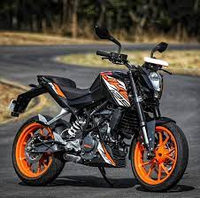

 KTM 200 Duke Specifications ; Displacement, 199.5 cc ; Engine Type, Single Cylinder, 4 Valve, Liquid Cooled, FI, DOHC ; No. of Cylinders, 1 ; Max Power, 25.83 PS @ ... Engine Type: Single Cylinder, 4 Valve, Liquid ... Max Power: 25.83 PS @ 10,000 rpm Fuel Capacity: 13.5 L Body Type: Sports Naked Bikes KTM 200 Duke Specifications ; Displacement, 199.5 cc ; Engine Type, Single Cylinder, 4 Valve, Liquid Cooled, FI, DOHC ; No. of Cylinders, 1 ; Max Power, 25.83 PS @ ... Engine Type: Single Cylinder, 4 Valve, Liquid ... Max Power: 25.83 PS @ 10,000 rpm Fuel Capacity: 13.5 L Body Type: Sports Naked Bikes